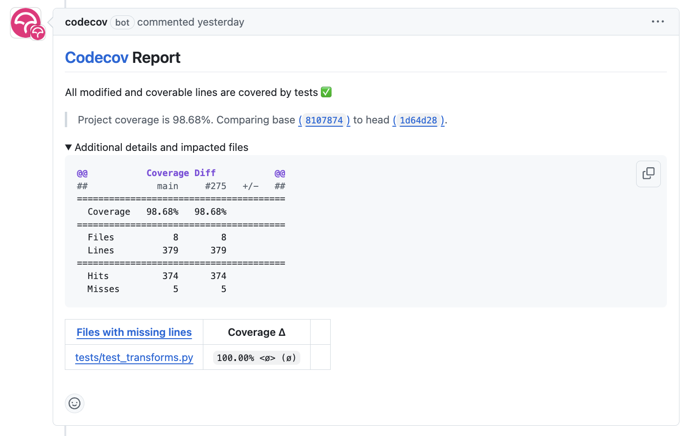
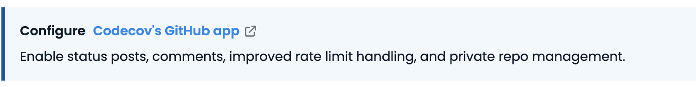
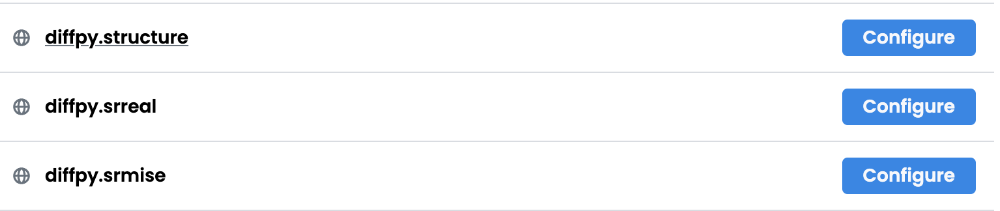
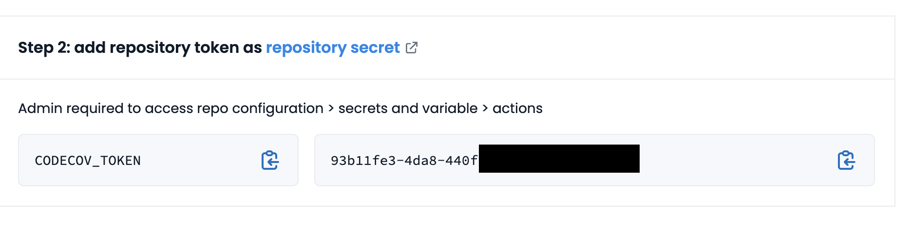
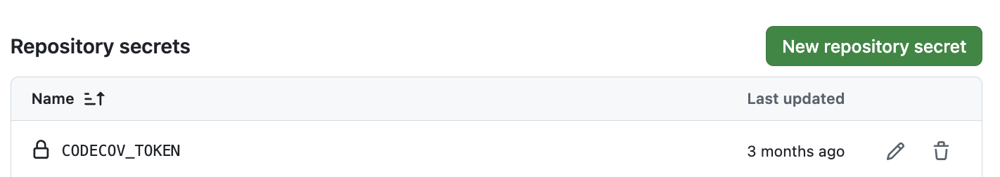

(Level 5) Share your code as a publicly installable package
Overview
Welcome! By the end of the tutorial, you will be able to share your code as a publicly installable package that can be installed using pip install <package-name> and conda install <package-name>.
Prerequisites
We assume that you have a basic understanding of starting a new project and have hosted at least one project on GitHub. If you are new to GitHub, we recommend starting with the (Level 4) Share code as a locally installable Python package where you will learn how to create a new project and host it on GitHub.
Make sure you have the latest version of scikit-package installed:
Install scikit-package with conda
Ensure that
condais installed on your local computer as instructed in (Required) Use conda environment to install packages and run Python code.Ensure that you have added the
conda-forgechannel to yourcondaconfiguration.$ conda config --add channels conda-forge
Create a new conda environment
skpkg-envand installscikit-packageandpre-commitsimultaneously by running the following command:$ conda create -n skpkg-env scikit-package pre-commit
Note
If the above command does not work, ensure you have added the
conda-forgechannel to yourcondaconfiguration in Step 2.Activate the environment:
$ conda activate skpkg-env
Confirm that you have the latest version of
scikit-packageavailable on GitHub:$ pip show scikit-package
Step 1. Create a new project with scikit-package
Run the following command to create a new project folder with
scikit-packageusing the Level 5publictemplate.$ package create public
Answer the following questions:
Field
Description and example
maintainer_name
The name of the project maintainer. e.g., Simon Billinge
maintainer_email
The maintainer’s email address. e.g., sbillinge@columbia.edu
maintainer_github_username
The maintainer’s GitHub username. e.g., sbillinge
contributors
Individuals or groups contributing to the project. e.g., Sangjoon Lee, Simon Billinge, Billinge Group members
license_holders
The license holders listed in
LICENSE.rst. e.g., The Trustees of Columbia University in the City of New Yorkproject_name
The name displayed in the
README.rstand documentation. Usename-with-hyphense.g.,my-package. To support namespace imports, see FAQgithub_username_or_orgname
The GitHub username or organization name. e.g., sbillinge or billingegroup
github_repo_name
The GitHub repository name. Use
name-with-hyphense.g., my-packageconda_pypi_package_dist_name
The name used for publishing to PyPI and conda-forge. Use
name-with-hyphense.g., my-packagepackage_dir_name
The name of the package directory under
src. Usename_with_underscorese.g., my_packageproject_short_description
A brief description of the project, shown in
pyproject.toml. e.g., A Python package standard for scientific codeproject_keywords
A list of keywords included in
pyproject.toml. e.g., PDF, diffraction, neutron, x-raymin_python_version
The minimum supported Python version. e.g. 3.11
max_python_version
The maximum supported Python version e.g. 3.13
needs_c_code_compiled
Specifies whether C code compilation is required. For pure Python packages, the default value is
No.has_gui_tests
Specifies whether GUI tests are included. For most packages, the default value is
No.Now type
lsto check a new folder has been created.
Install and test the new package locally
Enter into the Level 5 project directory.
$ cd <project_name>
Deactivate your conda environment and create a new conda environment. Below, replace
<max_python_version>with, for example, 3.13.$ conda deactivate $ conda create -n <project_name>-env python=<max_python_version> $ conda activate <project_name>-env
Install the dependencies listed in
requirements/conda.txtandrequirements/test.txt:$ condaa install \ --file requirements/test.txt \ --file requirements/conda.txt \
Install the package mode and run the unit tests:
$ pip install . $ pytest
Done! Let’s learn how to now build the documentation locally.
Build documentation locally
/doc is the the Sphinx documentation folder. The documentation will be built locally first and then automatically built and hosted on GitHub Pages when a new release is created.
Install the requirements for building the documentation.
$ conda install --file requirements/docs.txt
Then we will use an external tool called
sphinx-reloadto automatically reload the documentation when you make changes to.rstfiles.$ pip install sphinx-reload
Note
sphinx-reloadis only available via pip install.A HTML will appear automatically in your browser by running the following command:
$ sphinx-reload doc
Note
If you see the error “No module named” (e.g., WARNING: autodoc: failed to import module 'tools' from module 'diffpy.pdfmorph'; the following exception was raised: No module named 'diffpy.utils'), it can be resolved by adding autodoc_mock_imports = [<pkg>] to your conf.py right under imports. This file is located in /doc/source/conf.py.
Step 2. Create a new repository on GitHub
Visit https://github.com/new
Enter the
Repository name. You may usemy-packageor any other name you like.Choose
Public.Under Add .gitignore, set
None.Under Choose a license, set
None.Click the Create repository green button to create the repository.
Done!
Setup Codecov token for GitHub repository
For each PR, we use Codecov to report the test coverage percentage change as shown below.

To do so, the repository maintainer needs to provide a CODECOV_TOKEN. Please follow the step-by-step guide below.
Ensure your GitHub repository is public.
Visit https://app.codecov.io/
Connect your repository or organization with Codecov by clicking
Configure Codecov's GitHub app, shown below:
Scroll down, find your repository of interest, and click
Configure, shown below:
Scroll down again, copy
CODECOV_TOKEN, shown below:
In your GitHub repository, go to
Settings, then clickActionsunder theSecrets and Variablestab.Click
New repository secret.Paste the token value and name it as
CODECOV_TOKENsecret as shown below:
Done. The Codecov token is now set up for the repository. From now on, a new comment will be generated on each PR with the Codecov status automatically.
Allow GitHub Actions to write comments in PRs
As you will see in the next section, we’d like to have GitHub Actions write comments such as warnings. Let’s specify the permissions in the GitHub repository settings by following the steps below.
Visit the Settings page of the GitHub repository.
Click on Actions in the left sidebar.
Click on General in the left sidebar.
Scroll down to the Workflow permissions section.
Select Read and write permissions.
Done!
Step 3. Push your code to GitHub repository
Add news items in the GitHub pull request
Before merging to main, we require that each PR includes a file documenting the changes under \news. This ensures that the changes are documented in the CHANGELOG.rst when you create a new release, as shown in https://scikit-package.github.io/scikit-package/release.html, for example.
Important
If no news file is created for this PR, the CI will not only fail but also write a comment to remind you to create a news file. Recall we granted GitHub Actions permission to write comments in the PR in the previous section.
Let’s create a news item for the changes made in this PR.
Get the latest updates from the remote GitHub repository.
$ git fetch --all
Check out the
skpkg-migrationbranch and sync with the remote branch.$ git checkout skpkg-migration $ git pull origin skpkg-migration
Make a copy of
news/TEMPLATE.rstand rename tonews/<branch-name>.rst.(optional) If you are using a Linux shell, you can setup an
aliasto make the creation of the news file ready for editing much quicker and easier:Add the following line to
~/.bashrcor~/.zshrcfile:$ alias cpnews="cp news/TEMPLATE.rst news/$(git rev-parse --abbrev-ref HEAD).rst"
Run the following command to apply the shell configuration.
$ source ~/.bashrc # if you are using bash $ source ~/.zshrc # if you are using zsh
Now, whenever you want to create a news file, simply navigate to the top-level directory in the project and type
cpnewson the command line.You can then open the project in an editor. The news file located under
newswill have the name<branch-name>.rstwhere<branch-name>is replaced by the current branch name.Add a description of the edits made in this PR. This should be a user-facing high-level summary of the edits made in this PR and will be automatically converted into the
CHANGELOG.rstwhen the code is released.Note
How do I write good news items? What if the changes in the PR are trivial and no news is needed? Please check out the news guide in the FAQ here.
Do not delete
news/TEMPLATE.rst. Leave it as it is.Do not modify other section headers in the rst file. Replace
* <news item>with the following item:**Added:** * Support public releases with scikit-package by migrating the package from Level 4 to Level 5 in the scikit-package standard.
Push the change to the remote GitHub repository.
$ git add news/skpkg-migration.rst $ git commit -m "chore: Add news item for skpkg-migration" $ git push origin skpkg-migration